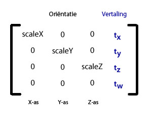

| Pakket | flash.geom |
| Klasse | public class Matrix3D |
| Overerving | Matrix3D |
| Taalversie: | ActionScript 3.0 |
| Runtimeversies: | Flash Player 10, AIR 1.5 |
Eén matrix kan verschillende transformaties ondersteunen en tegelijkertijd toepassen op een 3D-weergaveobject. Een matrix kan bijvoorbeeld worden toegepast op 3D-coördinaten om eerst te roteren en vervolgens te transleren.
Wanneer u de eigenschap z, of een van de andere eigenschappen voor roteren of schalen, van een weergaveobject expliciet instelt, wordt er automatisch een bijbehorend Matrix3D-object gemaakt.
Gebruik de eigenschap transform.matrix3d om toegang te krijgen tot het object Matrix3D van een 3D-weergaveobject. 2D-objecten hebben geen Matrix3D-object.
De waarde van de eigenschap z van een 2D-object is nul en de waarde van de eigenschap matrix3D is null.
Opmerking: Als hetzelfde Matrix3D-object wordt toegewezen aan twee verschillende weergaveobjecten, treedt er een runtime-fout op.
De klasse Matrix3D maakt gebruik van een matrix van 4x4: een tabel met vier rijen en kolommen met getallen die de gegevens voor de transformatie bevatten. De eerste drie rijen van de matrix bevatten gegevens voor elke 3D-as (x,y,z). De vertaalinformatie staat in de laatste kolom. De oriëntatie- en schalingsgegevens staan in de eerste drie kolommen. De schalingsfactoren zijn de diagonale getallen in de eerste drie kolommen. Hier ziet u een voorstelling van Matrix3D-elementen:

U hebt geen uitgebreide kennis van matrices nodig om de klasse Matrix3D te kunnen gebruiken. De klasse omvat specifieke methoden die transformatie en projectie vereenvoudigen, zoals de methoden appendTranslation(), appendRotation() en interpolateTo(). U kunt ook de methoden decompose() en recompose(), of de eigenschap rawData, gebruiken om toegang te krijgen tot de onderliggende matrixelementen.
Weergaveobjecten bewaren hun eigen asrotatie-eigenschappen zodat ze voor elke as een afzonderlijke rotatie kunnen hebben en de verschillende combinaties van rotaties kunnen beheren. Als een methode van een Matrix3D-object wordt aangeroepen om een weergaveobject te transformeren, wordt de rotatiecache van het object ongeldig gemaakt.
Verwante API-elementen
flash.geom.Transform
flash.geom.PerspectiveProjection
flash.geom.Vector3D
flash.geom.Orientation3D
flash.geom.Utils3D
flash.geom.Matrix
 Overerfde openbare eigenschappen verbergen
Overerfde openbare eigenschappen verbergen Overerfde openbare eigenschappen weergeven
Overerfde openbare eigenschappen weergeven| Eigenschap | Gedefinieerd door | ||
|---|---|---|---|
 | constructor : Object
Verwijzing naar het klasseobject of de constructorfunctie van een bepaalde objectinstantie. | Object | |
| determinant : Number [alleen-lezen]
Een getal dat bepaalt of een matrix kan worden geïnverteerd. | Matrix3D | ||
| position : Vector3D
Een Vector3D-object dat de positie, de 3D-coördinaat (x,y,z), van een weergaveobject bevat binnen het verwijzingsframe van de transformatie. | Matrix3D | ||
| rawData : Vector.<Number>
Een vector van 16 getallen, waarbij elke vier elementen een kolom vormen van een matrix van 4 x 4. | Matrix3D | ||
| Methode | Gedefinieerd door | ||
|---|---|---|---|
Maakt een Matrix3D-object. | Matrix3D | ||
Breidt de matrix uit door een ander Matrix3D-object te vermenigvuldigen met het huidige Matrix3D-object. | Matrix3D | ||
Voegt een incrementele rotatie toe aan een Matrix3D-object. | Matrix3D | ||
Voegt een incrementele schaalwijziging langs de X-, Y- en Z-assen, toe aan een Matrix3D-object. | Matrix3D | ||
Voegt een incrementele vertaling, een herplaatsing langs de X-, Y- en Z-assen, toe aan een Matrix3D-object. | Matrix3D | ||
Retourneert een nieuw Matrix3D-object dat een exacte kopie is van het huidige Matrix3D-object. | Matrix3D | ||
Hiermee wordt een Vector3D-object naar een specifieke kolom van het aanroepende Matrix3D-object gekopieerd. | Matrix3D | ||
Hiermee wordt een specifieke kolom van het aanroepende Matrix3D-object naar het Vector3D-object gekopieerd. | Matrix3D | ||
Hiermee worden alle matrixgegevens gekopieerd van het Matrix3D-bronobject naar het aanroepende Matrix3D -object. | Matrix3D | ||
Hiermee worden alle vectorgegevens gekopieerd van het vectorbronobject naar het aanroepende Matrix3D-object. | Matrix3D | ||
Hiermee worden alle matrixgegevens gekopieerd van het aanroepende Matrix3D-object naar de beschikbare vector. | Matrix3D | ||
Hiermee wordt een Vector3D-object naar een specifieke rij van het aanroepende Matrix3D-object gekopieerd. | Matrix3D | ||
Hiermee wordt een specifieke rij van het aanroepende Matrix3D-object naar het Vector3D-object gekopieerd. | Matrix3D | ||
| Matrix3D | |||
Retourneert de vertalings-, rotatie- en schaalinstellingen van de transformatiematrix als een vector van drie Vector3D-objecten. | Matrix3D | ||
Gebruikt de transformatiematrix zonder de vertaalelementen om een Vector3D-object te transformeren van de ene ruimtecoördinaat naar een andere. | Matrix3D | ||
|
Geeft aan of voor een object een opgegeven eigenschap is gedefinieerd. | Object | |
Converteert de huidige matrix naar een identiteits- of eenheidsmatrix. | Matrix3D | ||
[statisch]
Interpoleert de vertalings-, rotatie- en schaaltransformatie van een matrix in de richting van deze transformaties van de doelmatrix. | Matrix3D | ||
Interpoleert deze matrix in de richting van de vertalings-, rotatie- en schaaltransformaties van de doelmatrix. | Matrix3D | ||
Inverteert de huidige matrix. | Matrix3D | ||
|
Geeft aan of een instantie van de klasse Object zich in de prototypeketen van het object bevindt dat als parameter is opgegeven. | Object | |
Roteert het weergaveobject zo dat het naar een opgegeven positie is gericht. | Matrix3D | ||
Breidt de matrix aan het begin uit door het huidige Matrix3D-object te vermenigvuldigen met een ander Matrix3D-object. | Matrix3D | ||
Voegt een incrementele rotatie toe aan het begin van een Matrix3D-object. | Matrix3D | ||
Voegt een incrementele schaalwijziging langs de X-, Y- en Z-assen, toe aan het begin van een Matrix3D-object. | Matrix3D | ||
Voegt een incrementele vertaling, een herplaatsing langs de X-, Y- en Z-assen, toe aan het begin van een Matrix3D-object. | Matrix3D | ||
|
Geeft aan of de opgegeven eigenschap bestaat en kan worden opgesomd. | Object | |
Stelt de instellingen voor vertalen, roteren en schalen van de transformatiematrix in. | Matrix3D | ||
|
Stelt de beschikbaarheid van een dynamische eigenschap voor lusbewerkingen in. | Object | |
|
Geeft de tekenreeksweergave van dit object weer, geformatteerd volgens de locatiespecifieke conventies. | Object | |
|
Retourneert een tekenreeksrepresentatie van het opgegeven object. | Object | |
Gebruikt de transformatiematrix om een Vector3D-object te transformeren van de ene ruimtecoördinaat naar een andere. | Matrix3D | ||
Gebruikt de transformatiematrix om een vector van getallen te transformeren van de ene coördinaatruimte naar een andere. | Matrix3D | ||
Converteert het huidige Matrix3D-object in een matrix waarin de rijen en kolommen zijn verwisseld. | Matrix3D | ||
|
Retourneert de primitieve waarde van het opgegeven object. | Object | |
determinant | eigenschap |
determinant:Number [alleen-lezen] | Taalversie: | ActionScript 3.0 |
| Runtimeversies: | Flash Player 10, AIR 1.5 |
Een getal dat bepaalt of een matrix kan worden geïnverteerd.
Een Matrix3D-object moet inverteerbaar zijn. Met de eigenschap determinant kunt u zeker weten of een Matrix3D-object inverteerbaar is. Als determinant nul is, bestaat er geen inverse van de matrix. Als bijvoorbeeld een hele rij of kolom van een matrix nul is, of als twee rijen of kolommen gelijk zijn, is de determinant nul. Determinant wordt ook gebruikt om een reeks vergelijkingen op te lossen.
Alleen een vierkante matrix, zoals de klasse Matrix3D, heeft een determinant.
Implementatie
public function get determinant():NumberVerwante API-elementen
position | eigenschap |
position:Vector3D| Taalversie: | ActionScript 3.0 |
| Runtimeversies: | Flash Player 10, AIR 1.5 |
Een Vector3D-object dat de positie, de 3D-coördinaat (x,y,z), van een weergaveobject bevat binnen het verwijzingsframe van de transformatie. De eigenschap position biedt rechtstreeks toegang tot de vertaalvector van de matrix van het weergaveobject zonder dat de matrix moet worden ontleed en opnieuw moet worden samengesteld.
Met de eigenschap position kunt u de vertaalelementen van de transformatiematrix ophalen en instellen.
Implementatie
public function get position():Vector3D public function set position(value:Vector3D):voidVerwante API-elementen
rawData | eigenschap |
rawData:Vector.<Number>| Taalversie: | ActionScript 3.0 |
| Runtimeversies: | Flash Player 10, AIR 1.5 |
Een vector van 16 getallen, waarbij elke vier elementen een kolom vormen van een matrix van 4 x 4.
Een uitzondering wordt gegenereerd als de eigenschap rawData is ingesteld op een matrix die niet geïnverteerd kan worden. Het Matrix3D-object moet inverteerbaar zijn. Als een niet-inverteerbare matrix nodig is, maakt u een subklasse van het Matrix3D-object.
Implementatie
public function get rawData():Vector.<Number> public function set rawData(value:Vector.<Number>):voidVerwante API-elementen
Matrix3D | () | Constructor |
public function Matrix3D(v:Vector.<Number> = null)| Taalversie: | ActionScript 3.0 |
| Runtimeversies: | Flash Player 10, AIR 1.5 |
Maakt een Matrix3D-object. Matrix3D-objecten kunnen worden geïnitialiseerd met een vector van 16 getallen, waarbij elke vier elementen een kolom vormen. Wanneer het Matrix3D-object is gemaakt, kunt u de matrixelementen benaderen via de eigenschap rawData.
Als geen parameter is gedefinieerd, produceert de constructor een identiteit of Matrix3D-eenheidsobject. In de matrixnotatie heeft een identiteitsmatrix de waarde één voor alle elementen op de diagonale hoofdpositie, en de waarde nul voor alle andere elementen. De waarde van de eigenschap rawData van een identiteitsmatrix is: 1,0,0,0,0,1,0,0,0,0,1,0,0,0,0,1. De positie of vertaalwaarde van de identiteitsmatrix is Vector3D(0,0,0), de rotatie-instelling is Vector3D(0,0,0) en de schaalwaarde is Vector3D(1,1,1).
v:Vector.<Number> (default = null) |
Verwante API-elementen
append | () | methode |
public function append(lhs:Matrix3D):void| Taalversie: | ActionScript 3.0 |
| Runtimeversies: | Flash Player 10, AIR 1.5 |
Breidt de matrix uit door een ander Matrix3D-object te vermenigvuldigen met het huidige Matrix3D-object. Het resultaat is een combinatie van beide matrixtransformaties. U kunt een Matrix3D-object met vele matrixen vermenigvuldigen. Het uiteindelijke Matrix3D-object bevat het resultaat van alle transformaties.
Matrixvermenigvuldiging is iets anders dan matrixoptelling. Matrixvermenigvuldiging is niet verwisselbaar. Met andere woorden, A maal B is niet hetzelfde als B maal A. Met de methode append() vindt de vermenigvuldiging plaats vanaf de linkerzijde. Dat betekent dat het Matrix3D-object lhs zich aan de linkerkant van de vermenigvuldigingsoperator bevindt.
dezeMatrix = lhs * dezeMatrix;
De eerste keer dat de methode append() wordt aangeroepen, wordt een wijziging ten aanzien van de bovenliggende ruimte doorgevoerd. Volgende aanroepen hebben betrekking op het referentiekader van het toegevoegde Matrix3D-object.
De methode append() vervangt de huidige matrix door de toegevoegde matrix. Als u twee matrixen wilt toevoegen zonder de huidige matrix te veranderen, kopieert u de huidige matrix met de methode clone() en past u op de kopie de methode append() toe.
Parameters
lhs:Matrix3D — Een matrix aan de linkerzijde die wordt vermenigvuldigd met het huidige Matrix3D-object.
|
Verwante API-elementen
appendRotation | () | methode |
public function appendRotation(degrees:Number, axis:Vector3D, pivotPoint:Vector3D = null):void| Taalversie: | ActionScript 3.0 |
| Runtimeversies: | Flash Player 10, AIR 1.5 |
Voegt een incrementele rotatie toe aan een Matrix3D-object. Wanneer het Matrix3D-object op een weergaveobject wordt toegepast, voert de matrix de rotatie uit na de andere transformaties in het Matrix3D-object.
De rotatie van een weergaveobject wordt gedefinieerd door een as, een incrementele rotatiegraad rond de as en een optioneel draaipunt voor het middelpunt van de rotatie van het object. De as kan elke richting hebben. De gewone assen zijn de X_AXIS (Vector3D(1,0,0)), Y_AXIS (Vector3D(0,1,0)) en Z_AXIS (Vector3D(0,0,1)). In vliegtuigterminologie wordt de rotatie rond de Y-as een gier genoemd. De rotatie rond de X-as wordt een instelhoek genoemd. De rotatie rond de X-as wordt een rol genoemd.
De volgorde van de transformatie is van belang. Een rotatie, gevolgd door een vertalingstransformatie, geeft een ander effect dan een vertaling, gevolgd door een rotatietransformatie.
Het rotatie-effect is niet absoluut. Het is relatief ten opzichte van de huidige positie en oriëntatie. Gebruik de methode recompose() als u een absolute wijziging wilt aanbrengen in de transformatiematrix. De methode appendRotation() verschilt bovendien van de asrotatie-eigenschap van het weergaveobject, zoals de eigenschap rotationX. De rotatie-eigenschap wordt altijd uitgevoerd voor een vertaling, terwijl de methode appendRotation() wordt uitgevoerd ten opzichte van wat zich al in de matrix bevindt. Als u ervoor wilt zorgen dat u een soortgelijk effect krijgt als de asrotatie-eigenschap van het weergaveobject, gebruikt u de methode prependRotation(), die de rotatie vóór andere transformaties in de matrix uitvoert.
Als de transformatie van de methode appendRotation() wordt uitgevoerd op een Matrix3D-object van een weergaveobject, worden de in de cache opgeslagen waarden van de rotatie-eigenschap van het weergaveobject ongeldig gemaakt.
Een manier om een weergaveobject rond een specifiek punt ten opzichte van zijn locatie te laten draaien, is door de vertaling van het object in te stellen op het opgegeven punt, het object te draaien met de methode appendRotation() en het object weer naar de oorspronkelijke positie te vertalen. In het volgende voorbeeld wordt het 3D-weergaveobject myObject bij de coördinaat (10,10,0) geroteerd langs de y-as.
myObject.z = 1;
myObject.transform.matrix3D.appendTranslation(10,10,0);
myObject.transform.matrix3D.appendRotation(1, Vector3D.Y_AXIS);
myObject.transform.matrix3D.appendTranslation(-10,-10,0);
Parameters
degrees:Number — De mate van rotatie.
| |
axis:Vector3D — De as of richting van rotatie. De normale assen zijn de X_AXIS (Vector3D(1,0,0)), Y_AXIS (Vector3D(0,1,0)) en Z_AXIS (Vector3D(0,0,1)). Deze vector moet een lengte van één hebben.
| |
pivotPoint:Vector3D (default = null) |
Verwante API-elementen
appendScale | () | methode |
public function appendScale(xScale:Number, yScale:Number, zScale:Number):void| Taalversie: | ActionScript 3.0 |
| Runtimeversies: | Flash Player 10, AIR 1.5 |
Voegt een incrementele schaalwijziging langs de X-, Y- en Z-assen, toe aan een Matrix3D-object. Wanneer het Matrix3D-object op een weergaveobject wordt toegepast, voert de matrix de schaalwijzigingen uit na de andere transformaties in het Matrix3D-object. De standaardschalingsfactor is (1.0, 1.0, 1.0).
De schaal is gedefinieerd als een reeks van drie incrementele wijzigingen langs de drie assen (x,y,z). U kunt elke as vermenigvuldigen met een ander getal. Als de schaalwijzigingen op een weergaveobject worden toegepast, neemt de grootte van het object toe of af. Als u de X-, Y- en Z-as bijvoorbeeld instelt op twee, wordt het object twee keer zo groot, en als u de assen instelt op 0,5 wordt de grootte gehalveerd. Stel de andere parameters in op één als u ervoor wilt zorgen dat de schaaltransformatie alleen invloed heeft op een specifieke as. De parameter één betekent geen schaalwijziging langs de specifieke as.
De methode appendScale() kan worden gebruikt voor formaatwijziging maar ook om vervormingen te beheren, zoals het uitrekken of samentrekken van een weergaveobject, of voor het in- en uitzoomen op een locatie. Schaaltransformaties worden automatisch uitgevoerd tijdens het roteren en vertalen van een weergaveobject.
De volgorde van de transformatie is van belang. Een formaatwijziging, gevolgd door een vertalingstransformatie, geeft een ander effect dan een vertaling, gevolgd door een formaatwijzigingstransformatie.
Parameters
xScale:Number — Een vermenigvuldiger die wordt gebruikt om het object langs de x-as te schalen.
| |
yScale:Number — Een vermenigvuldiger die wordt gebruikt om het object langs de y-as te schalen.
| |
zScale:Number — Een vermenigvuldiger die wordt gebruikt om het object langs de Z-as te schalen.
|
Verwante API-elementen
appendTranslation | () | methode |
public function appendTranslation(x:Number, y:Number, z:Number):void| Taalversie: | ActionScript 3.0 |
| Runtimeversies: | Flash Player 10, AIR 1.5 |
Voegt een incrementele vertaling, een herplaatsing langs de X-, Y- en Z-assen, toe aan een Matrix3D-object. Wanneer het Matrix3D-object op een weergaveobject wordt toegepast, voert de matrix de vertalingswijzigingen uit na de andere transformaties in het Matrix3D-object.
De vertaling is gedefinieerd als een reeks van drie incrementele wijzigingen langs de drie assen (x,y,z). Wanneer de transformatie op een weergaveobject wordt toegepast, beweegt het weergaveobject zich vanuit de huidige locatie langs de X- Y- en Z-assen, zoals met de parameters is gespecificeerd. Stel de andere parameters in op nul als u ervoor wilt zorgen dat de vertaling alleen invloed heeft op een specifieke as. De parameter nul betekent geen wijziging langs de specifieke as.
De vertaalwijzigingen zijn niet absoluut. Ze zijn relatief ten aanzien van de huidige positie en oriëntatie van de matrix. Gebruik de methode recompose() als u een absolute wijziging wilt aanbrengen in de transformatiematrix. De volgorde van de transformatie is ook van belang. Een vertaling, gevolgd door een rotatietransformatie, geeft een ander effect dan een rotatie, gevolgd door een vertaling.
Parameters
x:Number — Een incrementele vertaling langs de X-as.
| |
y:Number — Een incrementele vertaling langs de Y-as.
| |
z:Number — Een incrementele vertaling langs de Z-as.
|
Verwante API-elementen
clone | () | methode |
public function clone():Matrix3D| Taalversie: | ActionScript 3.0 |
| Runtimeversies: | Flash Player 10, AIR 1.5 |
Retourneert een nieuw Matrix3D-object dat een exacte kopie is van het huidige Matrix3D-object.
Geretourneerde waardeMatrix3D — Een nieuw Matrix3D-object dat een exacte kopie is van het huidige Matrix3D-object.
|
copyColumnFrom | () | methode |
public function copyColumnFrom(column:uint, vector3D:Vector3D):void| Taalversie: | ActionScript 3.0 |
| Runtimeversies: | Flash Player 11, AIR 3.0, Flash Lite 4 |
Hiermee wordt een Vector3D-object naar een specifieke kolom van het aanroepende Matrix3D-object gekopieerd.
Parameters
column:uint — De doelkolom van de kopie.
| |
vector3D:Vector3D — Het Vector3D-object waaruit de gegevens moeten worden gekopieerd.
|
copyColumnTo | () | methode |
public function copyColumnTo(column:uint, vector3D:Vector3D):void| Taalversie: | ActionScript 3.0 |
| Runtimeversies: | Flash Player 11, AIR 3.0, Flash Lite 4 |
Hiermee wordt een specifieke kolom van het aanroepende Matrix3D-object naar het Vector3D-object gekopieerd.
Parameters
column:uint — De kolom waaruit de gegevens moeten worden gekopieerd.
| |
vector3D:Vector3D — Het doel-Vector3D-object van de kopie.
|
copyFrom | () | methode |
public function copyFrom(sourceMatrix3D:Matrix3D):void| Taalversie: | ActionScript 3.0 |
| Runtimeversies: | Flash Player 11, AIR 3.0, Flash Lite 4 |
Hiermee worden alle matrixgegevens gekopieerd van het Matrix3D-bronobject naar het aanroepende Matrix3D -object.
Parameters
sourceMatrix3D:Matrix3D — Het Matrix3D-object waaruit de gegevens moeten worden gekopieerd.
|
copyRawDataFrom | () | methode |
public function copyRawDataFrom(vector:Vector.<Number>, index:uint = 0, transpose:Boolean = false):void| Taalversie: | ActionScript 3.0 |
| Runtimeversies: | Flash Player 11, AIR 3.0, Flash Lite 4 |
Hiermee worden alle vectorgegevens gekopieerd van het vectorbronobject naar het aanroepende Matrix3D-object. Met de optionele indexparameter kunt u elk startpunt in de vector selecteren.
Parameters
vector:Vector.<Number> — Het vectorobject waaruit de gegevens moeten worden gekopieerd.
| |
index:uint (default = 0) | |
transpose:Boolean (default = false) |
copyRawDataTo | () | methode |
public function copyRawDataTo(vector:Vector.<Number>, index:uint = 0, transpose:Boolean = false):void| Taalversie: | ActionScript 3.0 |
| Runtimeversies: | Flash Player 11, AIR 3.0, Flash Lite 4 |
Hiermee worden alle matrixgegevens gekopieerd van het aanroepende Matrix3D-object naar de beschikbare vector. Met de optionele indexparameter kunt u elk doelstartpunt in de vector selecteren.
Parameters
vector:Vector.<Number> — Het vectorobject waarin de gegevens moeten worden gekopieerd.
| |
index:uint (default = 0) | |
transpose:Boolean (default = false) |
copyRowFrom | () | methode |
public function copyRowFrom(row:uint, vector3D:Vector3D):void| Taalversie: | ActionScript 3.0 |
| Runtimeversies: | Flash Player 11, AIR 3.0, Flash Lite 4 |
Hiermee wordt een Vector3D-object naar een specifieke rij van het aanroepende Matrix3D-object gekopieerd.
Parameters
row:uint — De rij waarin de gegevens moeten worden gekopieerd.
| |
vector3D:Vector3D — Het Vector3D-object waaruit de gegevens moeten worden gekopieerd.
|
copyRowTo | () | methode |
public function copyRowTo(row:uint, vector3D:Vector3D):void| Taalversie: | ActionScript 3.0 |
| Runtimeversies: | Flash Player 11, AIR 3.0, Flash Lite 4 |
Hiermee wordt een specifieke rij van het aanroepende Matrix3D-object naar het Vector3D-object gekopieerd.
Parameters
row:uint — De rij waaruit de gegevens moeten worden gekopieerd.
| |
vector3D:Vector3D — Het Vector3D-object waarnaar de gegevens moeten worden gekopieerd.
|
copyToMatrix3D | () | methode |
decompose | () | methode |
public function decompose(orientationStyle:String = "eulerAngles"):Vector.<Vector3D>| Taalversie: | ActionScript 3.0 |
| Runtimeversies: | Flash Player 10, AIR 1.5 |
Retourneert de vertalings-, rotatie- en schaalinstellingen van de transformatiematrix als een vector van drie Vector3D-objecten. Het eerste Vector3D-object bevat de vertalingselementen. Het tweede Vector3D-object bevat de rotatie-elementen. Het derde Vector3D-object bevat de schaalelementen.
Sommige Matrix3D-methoden, zoals de methode interpolateTo() ontleden de matrix automatisch en stellen deze opnieuw samen om hun transformatie uit te voeren.
Als u de transformatie van een matrix wilt wijzigen met een absoluut bovenliggend referentiekader, haalt u de instellingen op met de methode decompose() en brengt u de gewenste wijzigingen aan. U kunt het Matrix3D-object vervolgens op de gewijzigde transformatie instellen met de methode recompose().
De parameter van de methode decompose() bepaalt de oriëntatiestijl die voor de transformatie moet worden gebruikt. De standaardoriëntatie is eulerAngles; deze definieert de oriëntatie met drie afzonderlijke rotatiehoeken voor elke as. De rotaties worden opeenvolgend uitgevoerd en veranderen elkaars as niet. De asrotatie-eigenschappen van het weergaveobject voeren een transformatie met de oriëntatiestijl Euler-hoeken uit. De andere mogelijke oriëntatiestijlen zijn axisAngle en quaternion. De oriëntatie van de ashoek maakt gebruik van een combinatie van een as en een hoek om de oriëntatie te bepalen. De as waaromheen het object wordt gedraaid is een eenheidsvector die een richting voorstelt. De hoek stelt de grootte van de rotatie rond de vector voor. De richting bepaalt ook waarnaar een weergaveobject is gericht en de hoek bepaalt welke kant naar boven is gericht. De methoden appendRotation() en prependRotation() maken gebruik van de oriëntatie Ashoek. De viertal-oriëntatie maakt gebruik van complexe getallen en het vierde element van een vector. De oriëntatie wordt voorgesteld door de drie rotatieassen (x,y,z) en een rotatiehoek (w). De methode interpolate() maakt gebruik van viertallen.
Parameters
orientationStyle:String (default = "eulerAngles")eulerAngles (constante EULER_ANGLES), axisAngle (constante AXIS_ANGLE) en quaternion (constante QUATERNION). Zie de klasse geom.Orientation3D voor meer informatie over de verschillende oriëntatiestijlen.
|
Vector.<Vector3D> — Een vector van drie Vector3D-objecten, die respectievelijk de instellingen bevatten voor vertaling, rotatie en schaal.
|
Verwante API-elementen
Voorbeeld ( Hoe dit voorbeeld te gebruiken )
decompose() en recompose() gebruikt om een ovaal horizontaal uit te rekken terwijl deze zich naar een verdwijnend punt beweegt. Het eerste Vector3D-object dat door de methode decompose() wordt geretourneerd, bevat de coördinaten voor vertaling. Het derde Vector3D-object bevat de schaalinstellingen. De methode incrementBy() van het Vector3D-object verhoogt de absolute instellingen voor vertaling en schalen van de matrix.
package {
import flash.display.MovieClip;
import flash.display.Shape;
import flash.geom.*;
import flash.events.Event;
public class Matrix3DdecomposeExample extends MovieClip {
private var ellipse:Shape = new Shape();
public function Matrix3DdecomposeExample():void {
ellipse.x = (this.stage.stageWidth / 2);
ellipse.y = (this.stage.stageHeight - 40);
ellipse.z = 1;
ellipse.graphics.beginFill(0xFF0000);
ellipse.graphics.lineStyle(2);
ellipse.graphics.drawEllipse(0, 0, 50, 40);
ellipse.graphics.endFill();
addChild(ellipse);
ellipse.addEventListener(Event.ENTER_FRAME, enterFrameHandler);
}
private function enterFrameHandler(e:Event):void {
var v3:Vector.<Vector3D> = new Vector.<Vector3D>(3);
v3 = ellipse.transform.matrix3D.decompose();
v3[0].incrementBy(new Vector3D(0,0,1));
v3[2].incrementBy(new Vector3D(0.01,0,0));
ellipse.transform.matrix3D.recompose(v3);
}
}
}
deltaTransformVector | () | methode |
public function deltaTransformVector(v:Vector3D):Vector3D| Taalversie: | ActionScript 3.0 |
| Runtimeversies: | Flash Player 10, AIR 1.5 |
Gebruikt de transformatiematrix zonder de vertaalelementen om een Vector3D-object te transformeren van de ene ruimtecoördinaat naar een andere. Het geretourneerde Vector3D-object bevat de nieuwe coördinaten nadat de rotatie- en schaaltransformaties zijn toegepast. Als de methode deltaTransformVector() van toepassing is op een matrix die alleen een vertaaltransformatie bevat, is het geretourneerde Vector3D-object gelijk aan het originele Vector3D-object.
Met de methode deltaTransformVector() kunt u een weergaveobject in één coördinaatruimte laten antwoorden op de rotatietransformatie van een tweede weergaveobject. Het object kopieert de rotatie niet, maar verandert alleen de positie om de wijzigingen in de rotatie te weerspiegelen. Als u bijvoorbeeld de API display.Graphics wilt gebruiken voor het tekenen van een roterend 3D-weergaveobject, moet u de rotatiecoördinaten van het object toewijzen aan een 2D-punt. Gebruik eerst de methode deltaTransformVector() om na elke rotatie de 3D-coördinaten van het object op te halen. Pas vervolgens de methode local3DToGlobal() van het weergaveobject toe om de 3D-coördinaten te transleren naar 2D-punten. Vervolgens kunt u de 2D-punten gebruiken om het roterende 3D-object te tekenen.
Opmerking: Deze methode stelt de w-component van de doorgestuurde Vector3D automatisch in op 0.0.
Parameters
v:Vector3D — Een Vector3D-object dat de coördinaten bevat die zullen worden getransformeerd.
|
Vector3D — Een Vector3D-object met de getransformeerde coördinaten.
|
Verwante API-elementen
identity | () | methode |
public function identity():void| Taalversie: | ActionScript 3.0 |
| Runtimeversies: | Flash Player 10, AIR 1.5 |
Converteert de huidige matrix naar een identiteits- of eenheidsmatrix. Een identiteitsmatrix heeft de waarde één voor de elementen langs de hoofddiagonaal en de waarde nul voor alle andere elementen. Het resultaat is een matrix waarvan de waarde rawData 1,0,0,0,0,1,0,0,0,0,1,0,0,0,0,1 is, de rotatie is ingesteld op Vector3D(0,0,0), de positie en vertaling zijn ingesteld op Vector3D(0,0,0) en de schaal is ingesteld op Vector3D(1,1,1). Hier ziet u een voorstelling van een identiteitsmatrix.

Een object dat is getransformeerd door een identiteitsmatrix toe te passen, voert geen transformatie uit. Met andere woorden, als een matrix wordt vermenigvuldigd met een identiteitsmatrix, is het resultaat een matrix die identiek is aan de originele matrix.
interpolate | () | methode |
public static function interpolate(thisMat:Matrix3D, toMat:Matrix3D, percent:Number):Matrix3D| Taalversie: | ActionScript 3.0 |
| Runtimeversies: | Flash Player 10, AIR 1.5 |
Interpoleert de vertalings-, rotatie- en schaaltransformatie van een matrix in de richting van deze transformaties van de doelmatrix.
Met de methode interpolate() vermijdt u bepaalde ongewenste resultaten die kunnen optreden bij methoden zoals de asrotatie-eigenschappen van het weergaveobject. De methode interpolate() maakt de in de cache opgeslagen waarde van de rotatie-eigenschap van het weergaveobject ongeldig en converteert de oriëntatie-eigenschappen van de matrix van het weergaveobject vóór de interpolatie naar een viertal. Deze methode garandeert het kortste en meest doeltreffende pad voor rotatie. Het produceert eveneens een vloeiende rotatie zonder kompasvergrendeling. Bij het gebruik van Euler-hoeken, waarbij elke as onafhankelijk wordt afgehandeld, kan een kompasvergrendeling optreden. Tijdens de rotatie rond twee of meer assen, kunnen de assen worden uitgelijnd, wat tot onverwachte resultaten leidt. Met Viertal-rotatie vermijdt u een kompasvergrendeling.
Opeenvolgende aanroepen naar de methode interpolate() kunnen het effect opleveren van een weergaveobject dat snel begint en vervolgens langzaam een ander weergaveobject nadert Als u de parameter thisMat bijvoorbeeld instelt op het geretourneerde Matrix3D-object, de parameter toMat op het Matrix3D-object dat aan het doelweergaveobject is gekoppeld en de parameter percent op 0.1, verplaatst het weergaveobject zich tien procent in de richting van het doelobject. Bij volgende aanroepen of in volgende kaders verplaatst het object zich tien procent van de resterende 90 procent, daarna tien procent van de resterende afstand, totdat het object het doel heeft bereikt.
Parameters
thisMat:Matrix3D — Het Matrix3D-object dat moet worden geïnterpoleerd.
| |
toMat:Matrix3D — Het doel-Matrix3D-object.
| |
percent:Number — Een waarde tussen 0 en 1 die het percentage bepaalt dat het Matrix3D-object thisMat wordt geïnterpoleerd in de richting van het doel-Matrix3D-object.
|
Matrix3D — Een Matrix3D-object met elementen die de waarden van de matrix tussen de originele matrix en de doelmatrix plaatsen. Als de geretourneerde matrix wordt toegepast op weergaveobject this, verplaatst het object zich één procent dichter naar het doelobject toe.
|
Verwante API-elementen
interpolateTo | () | methode |
public function interpolateTo(toMat:Matrix3D, percent:Number):void| Taalversie: | ActionScript 3.0 |
| Runtimeversies: | Flash Player 10, AIR 1.5 |
Interpoleert deze matrix in de richting van de vertalings-, rotatie- en schaaltransformaties van de doelmatrix.
Met de methode interpolateTo() vermijdt u de ongewenste resultaten die kunnen optreden bij methoden zoals de asrotatie-eigenschappen van het weergaveobject. De methode interpolateTo() maakt de in de cache opgeslagen waarde van de rotatie-eigenschap van het weergaveobject ongeldig en converteert de oriëntatie-eigenschappen van de matrix van het weergaveobject vóór de interpolatie naar een viertal. Deze methode garandeert het kortste en meest doeltreffende pad voor rotatie. Het produceert eveneens een vloeiende rotatie zonder kompasvergrendeling. Bij het gebruik van Euler-hoeken, waarbij elke as onafhankelijk wordt afgehandeld, kan een kompasvergrendeling optreden. Tijdens de rotatie rond twee of meer assen, kunnen de assen worden uitgelijnd, wat tot onverwachte resultaten leidt. Met Viertal-rotatie vermijdt u een kompasvergrendeling.
Opmerking: in het geval van interpolatie wordt de schaalwaarde van de matrix opnieuw ingesteld en wordt de matrix genormaliseerd.
Opeenvolgende aanroepen naar de methode interpolateTo() kunnen het effect opleveren van een weergaveobject dat snel begint en vervolgens langzaam een ander weergaveobject nadert Als de parameter percent bijvoorbeeld is ingesteld op 0,1, verplaatst het weergaveobject zich tien procent in de richting van het doelobject dat is opgegeven met de parameter toMat. Bij volgende aanroepen of in volgende kaders verplaatst het object zich tien procent van de resterende 90 procent, daarna tien procent van de resterende afstand, totdat het object het doel heeft bereikt.
Parameters
toMat:Matrix3D — Het doel-Matrix3D-object.
| |
percent:Number — Een waarde tussen 0 en 1 die de locatie van het weergaveobject ten opzichte van het doel bepaalt. Hoe dichter de waarde bij 1,0 ligt, des te dichter het weergaveobject zich bij de huidige positie bevindt. Hoe dichter de waarde bij 0 ligt, des te dichter het weergaveobject zich bij het doel bevindt.
|
Verwante API-elementen
Voorbeeld ( Hoe dit voorbeeld te gebruiken )
ellipse2, een driedimensionaal weergaveobject, zich in de richting van ellipse1, een ander driedimensionaal weergaveobject. ellipse2 blijft ellipse1 volgen en probeert het te bereiken. Als ellipse1 niet rond zijn Y-as draait, bereikt ellipse2 ellipse1 en landt het er bovenop. De twee ovalen zijn op dezelfde manier getekend, maar zijn op verschillende driedimensionale locaties in de wereldruimte geplaatst.
package {
import flash.display.MovieClip;
import flash.display.Shape;
import flash.display.Graphics;
import flash.geom.*;
import flash.events.Event;
public class InterpolateToExample extends MovieClip {
private var ellipse1:Shape = new Shape();
private var ellipse2:Shape = new Shape();
public function InterpolateToExample():void {
ellipse1 = myEllipses(250, 100, 500, 0xFF0000);
addChild(ellipse1);
ellipse2 = myEllipses(-30, 120, 1, 0x00FF00);
addChild(ellipse2);
addEventListener(Event.ENTER_FRAME, enterFrameHandler);
}
private function myEllipses(x:Number, y:Number, z:Number, c:Number):Shape {
var s:Shape = new Shape();
s.x = x;
s.y = y;
s.z = z;
s.graphics.beginFill(c);
s.graphics.lineStyle(2);
s.graphics.drawEllipse(100, 50, 100, 80);
s.graphics.endFill();
return s;
}
private function enterFrameHandler(e:Event) {
ellipse1.rotationY += 1;
ellipse2.transform.matrix3D.interpolateTo(ellipse1.transform.matrix3D, 0.1);
}
}
}
invert | () | methode |
public function invert():Boolean| Taalversie: | ActionScript 3.0 |
| Runtimeversies: | Flash Player 10, AIR 1.5 |
Inverteert de huidige matrix. Een geïnverteerde matrix is even groot als de originele matrix, maar voert de tegenovergestelde transformatie uit van de originele matrix. Als de originele matrix bijvoorbeeld een object heeft dat in de ene richting rond de X-as draait, heeft de inverse van de matrix een object dat in de tegenovergestelde richting rond de as draait. Door een geïnverteerde matrix op een object toe te passen, maakt u niet de transformatie ongedaan die door de originele matrix wordt uitgevoerd. Als een matrix wordt vermenigvuldigd met diens geïnverteerde matrix, is het resultaat een identiteitsmatrix.
Een inversie van een matrix kan worden gebruikt om de ene matrix door een andere te delen. U deelt matrix A dus door matrix B door matrix A te vermenigvuldigen met de inverse van matrix B. De geïnverteerde matrix kan ook worden gebruikt met een cameraruimte. Als de camera zich in de wereldruimte begeeft, moet het object in de wereld zich in de tegenovergestelde richting voortbewegen om te transformeren van de wereldweergave naar de camera- of weergaveruimte. Als de camera bijvoorbeeld dichterbij komt, worden de objecten groter. Met andere woorden, als de camera zich langs de wereld-Z-as naar beneden beweegt, bewegen de objecten langs de wereld-Z-as naar boven.
De methode invert() vervangt de huidige matrix door de geïnverteerde matrix. Als u een matrix wilt inverteren zonder de huidige matrix te veranderen, kopieert u eerst de huidige matrix met de methode clone() en past u op de kopie de methode invert() toe.
Het Matrix3D-object moet inverteerbaar zijn.
Geretourneerde waardeBoolean — Retourneert true als de matrix met succes is geïnverteerd.
|
Verwante API-elementen
pointAt | () | methode |
public function pointAt(pos:Vector3D, at:Vector3D = null, up:Vector3D = null):void| Taalversie: | ActionScript 3.0 |
| Runtimeversies: | Flash Player 10, AIR 1.5 |
Roteert het weergaveobject zo dat het naar een opgegeven positie is gericht. Met deze methode kan de oriëntatie ter plekke worden gewijzigd. De voorwaartse richtingsvector van het weergaveobject (het Vector3Dobject at) wijst naar de opgegeven wereld-relatieve positie. De opwaartse richting van het weergaveobject wordt opgegeven met het Vector3D-object up.
De methode pointAt() maakt de in de cache opgeslagen waarde voor de rotatie-eigenschap van het weergaveobject ongeldig. De methode ontleedt de matrix van het weergaveobject en wijzigt de rotatie-elementen zodat het object naar de opgegeven positie wordt gedraaid. Daarna wordt de matrix van het weergaveobject opnieuw samengesteld (bijgewerkt), waardoor de transformatie wordt uitgevoerd. Als het object naar een bewegend doel wijst, bijvoorbeeld de positie van een bewegend object, laat de methode het object bij elke volgende aanroep in de richting van het bewegende doel draaien.
Opmerking: als u de Matrix3D.pointAt()-methode gebruikt zonder de optionele parameters in te stellen, wordt het doelobject niet standaard in de opgegeven positie in verhouding tot de wereld weergegeven. U moet de waarden voor at op de -Y-as (0,-1,0) instellen en up op de -Z-as (0,0,-1).
Parameters
pos:Vector3D — De wereld-relatieve positie van het doelobject. Wereld-relatief definieert de transformatie van het object ten opzichte van de wereldruimte en -coördinaten waar alle objecten zijn gepositioneerd.
| |
at:Vector3D (default = null) | |
up:Vector3D (default = null) |
Verwante API-elementen
Voorbeeld ( Hoe dit voorbeeld te gebruiken )
pointAt() wijzigen om te zien wat de invloed daarvan is op de beweging van de driehoek.
package {
import flash.display.MovieClip;
import flash.display.Shape;
import flash.display.Graphics;
import flash.geom.*;
import flash.events.Event;
public class PointAtExample extends MovieClip {
private var ellipse:Shape = new Shape();
private var triangle:Shape = new Shape();
public function PointAtExample():void {
ellipse.graphics.beginFill(0xFF0000);
ellipse.graphics.lineStyle(2);
ellipse.graphics.drawEllipse(30, 40, 50, 40);
ellipse.graphics.endFill();
ellipse.x = 100;
ellipse.y = 150;
ellipse.z = 1;
triangle.graphics.beginFill(0x0000FF);
triangle.graphics.moveTo(0, 0);
triangle.graphics.lineTo(40, 40);
triangle.graphics.lineTo(80, 0);
triangle.graphics.lineTo(0, 0);
triangle.graphics.endFill();
triangle.x = 200;
triangle.y = 50;
triangle.z = 1;
addChild(ellipse);
addChild(triangle);
ellipse.addEventListener(Event.ENTER_FRAME, ellipseEnterFrameHandler);
triangle.addEventListener(Event.ENTER_FRAME, triangleEnterFrameHandler);
}
private function ellipseEnterFrameHandler(e:Event) {
if(e.target.y > 0) {
e.target.y -= 1;
e.target.x -= 1;
}
}
private function triangleEnterFrameHandler(e:Event) {
e.target.transform.matrix3D.pointAt(ellipse.transform.matrix3D.position,
Vector3D.X_AXIS, Vector3D.Y_AXIS);
}
}
}
prepend | () | methode |
public function prepend(rhs:Matrix3D):void| Taalversie: | ActionScript 3.0 |
| Runtimeversies: | Flash Player 10, AIR 1.5 |
Breidt de matrix aan het begin uit door het huidige Matrix3D-object te vermenigvuldigen met een ander Matrix3D-object. Het resultaat is een combinatie van beide matrixtransformaties.
Matrixvermenigvuldiging is iets anders dan matrixoptelling. Matrixvermenigvuldiging is niet verwisselbaar. Met andere woorden, A maal B is niet hetzelfde als B maal A. Met de methode prepend() vindt de vermenigvuldiging plaats vanaf de rechterzijde. Dat betekent dat het Matrix3D-object rhs zich aan de rechterkant van de vermenigvuldigingsoperator bevindt.
dezeMatrix = dezeMatrix * rhs
De wijzigingen die met de methode prepend() worden doorgevoerd, vinden plaats ten opzichte van de objectruimte. Met andere woorden, ze zijn altijd relatief ten opzichte van het eerste referentiekader van het object.
De methode prepend() vervangt de huidige matrix door de aan het begin toegevoegde matrix. Als u twee matrixen aan het begin wilt toevoegen zonder de huidige matrix te veranderen, kopieert u eerst de huidige matrix met de methode clone() en past u op de kopie de methode prepend() toe.
Parameters
rhs:Matrix3D — Een rechterzijde van de matrix waarmee de huidige Matrix3D wordt vermenigvuldigd.
|
Verwante API-elementen
prependRotation | () | methode |
public function prependRotation(degrees:Number, axis:Vector3D, pivotPoint:Vector3D = null):void| Taalversie: | ActionScript 3.0 |
| Runtimeversies: | Flash Player 10, AIR 1.5 |
Voegt een incrementele rotatie toe aan het begin van een Matrix3D-object. Wanneer het Matrix3D-object op een weergaveobject wordt toegepast, voert de matrix de rotatie uit vóór de andere transformaties in het Matrix3D-object.
De rotatie van een weergaveobject wordt gedefinieerd door een as, een incrementele rotatiegraad rond de as en een optioneel draaipunt voor het middelpunt van de rotatie van het object. De as kan elke richting hebben. De gewone assen zijn de X_AXIS (Vector3D(1,0,0)), Y_AXIS (Vector3D(0,1,0)) en Z_AXIS (Vector3D(0,0,1)). In vliegtuigterminologie wordt de rotatie rond de Y-as een gier genoemd. De rotatie rond de X-as wordt een instelhoek genoemd. De rotatie rond de X-as wordt een rol genoemd.
De volgorde van de transformatie is van belang. Een rotatie, gevolgd door een vertalingstransformatie, geeft een ander effect dan een vertaling, gevolgd door een rotatie.
Het rotatie-effect is niet absoluut. Het effect is object-relatief, relatief ten opzichte van het referentiekader van de originele positie en oriëntatie. Gebruik de methode recompose() als u een absolute wijziging wilt aanbrengen in de transformatie.
Als de transformatie van de methode prependRotation() wordt uitgevoerd op een Matrix3D-object van een weergaveobject, worden de in de cache opgeslagen waarden van de rotatie-eigenschap van het weergaveobject ongeldig gemaakt.
Eén manier om een weergaveobject te roteren rond een specifiek punt ten opzichte van de eigen locatie is door het translatiepunt van het object in te stellen op dat punt, het object te draaien met de methode prependRotation() en het object weer terug te transleren naar de originele positie. In het volgende voorbeeld wordt het 3D-weergaveobject myObject bij de coördinaat (10,10,0) geroteerd langs de y-as.
myObject.z = 1;
myObject.transform.matrix3D.prependTranslation(10,10,0);
myObject.transform.matrix3D.prependRotation(1, Vector3D.Y_AXIS);
myObject.transform.matrix3D.prependTranslation(-10,-10,0);
Parameters
degrees:Number — De mate van rotatie.
| |
axis:Vector3D — De as of richting van rotatie. De normale assen zijn de X_AXIS (Vector3D(1,0,0)), Y_AXIS (Vector3D(0,1,0)) en Z_AXIS (Vector3D(0,0,1)). Deze vector moet een lengte van één hebben.
| |
pivotPoint:Vector3D (default = null) |
Verwante API-elementen
Voorbeeld ( Hoe dit voorbeeld te gebruiken )
package {
import flash.display.MovieClip;
import flash.display.Shape;
import flash.geom.*;
import flash.events.MouseEvent;
public class Matrix3DprependRotationExample extends MovieClip {
private var ellipse:Shape = new Shape();
public function Matrix3DprependRotationExample():void {
ellipse.graphics.beginFill(0xFF0000);
ellipse.graphics.lineStyle(2);
ellipse.graphics.drawEllipse(-50, -40, 100, 80);
ellipse.graphics.endFill();
ellipse.x = (this.stage.stageWidth / 2);
ellipse.y = (this.stage.stageHeight / 2);
ellipse.z = 1;
addChild(ellipse);
stage.addEventListener(MouseEvent.MOUSE_MOVE, mouseMoveHandler);
}
private function mouseMoveHandler(e:MouseEvent):void {
var y:int;
var x:int;
if(e.localX > ellipse.x) {
y = (Math.round(e.localX) / 100);
} else {
y = -(Math.round(e.localX) / 10);
}
if(e.localY > ellipse.y) {
x = (Math.round(e.localY) / 100);
} else {
x = -(Math.round(e.localY) / 100);
}
ellipse.transform.matrix3D.prependRotation(y, Vector3D.Y_AXIS);
ellipse.transform.matrix3D.prependRotation(x, Vector3D.X_AXIS);
}
}
}
prependScale | () | methode |
public function prependScale(xScale:Number, yScale:Number, zScale:Number):void| Taalversie: | ActionScript 3.0 |
| Runtimeversies: | Flash Player 10, AIR 1.5 |
Voegt een incrementele schaalwijziging langs de X-, Y- en Z-assen, toe aan het begin van een Matrix3D-object. Wanneer het Matrix3D-object op een weergaveobject wordt toegepast, voert de matrix de schaalwijzigingen uit vóór de andere transformaties in het Matrix3D-object. De wijzigingen zijn object-relatief, relatief ten opzichte van het referentiekader van de originele positie en oriëntatie. De standaardschalingsfactor is (1.0, 1.0, 1.0).
De schaal is gedefinieerd als een reeks van drie incrementele wijzigingen langs de drie assen (x,y,z). U kunt elke as vermenigvuldigen met een ander getal. Als de schaalwijzigingen op een weergaveobject worden toegepast, neemt de grootte van het object toe of af. Als u de X-, Y- en Z-as bijvoorbeeld instelt op twee, wordt het object twee keer zo groot, en als u de assen instelt op 0,5 wordt de grootte gehalveerd. Stel de andere parameters in op één als u ervoor wilt zorgen dat de schaaltransformatie alleen invloed heeft op een specifieke as. De parameter één betekent geen schaalwijziging langs de specifieke as.
De methode prependScale() kan worden gebruikt voor formaatwijziging, maar ook voor het beheren van vervormingen, zoals het uitrekken of samentrekken van een weergaveobject. Deze kan ook worden gebruikt om op een locatie in of uit te zoomen. Schaaltransformaties worden automatisch uitgevoerd tijdens het roteren en vertalen van een weergaveobject.
De volgorde van de transformatie is van belang. Een formaatwijziging, gevolgd door een vertalingstransformatie, geeft een ander effect dan een vertaling, gevolgd door een formaatwijzigingstransformatie.
Parameters
xScale:Number — Een vermenigvuldiger die wordt gebruikt om het object langs de x-as te schalen.
| |
yScale:Number — Een vermenigvuldiger die wordt gebruikt om het object langs de y-as te schalen.
| |
zScale:Number — Een vermenigvuldiger die wordt gebruikt om het object langs de Z-as te schalen.
|
Verwante API-elementen
prependTranslation | () | methode |
public function prependTranslation(x:Number, y:Number, z:Number):void| Taalversie: | ActionScript 3.0 |
| Runtimeversies: | Flash Player 10, AIR 1.5 |
Voegt een incrementele vertaling, een herplaatsing langs de X-, Y- en Z-assen, toe aan het begin van een Matrix3D-object. Wanneer het Matrix3D-object op een weergaveobject wordt toegepast, voert de matrix de vertalingswijzigingen uit vóór de andere transformaties in het Matrix3D-object.
Vertaling bepaalt de afstand die het weergaveobject langs de X-, Y- en Z-as aflegt vanaf de huidige locatie. De methode prependTranslation() stelt de vertaling in als een reeks van drie incrementele wijzigingen langs de drie assen (x,y,z). Stel de andere parameters in op nul als u wilt dat een vertaling maar één specifieke as verandert. De parameter nul betekent geen wijziging langs de specifieke as.
De vertaalwijzigingen zijn niet absoluut. Het effect is object-relatief, relatief ten opzichte van het referentiekader van de originele positie en oriëntatie. Gebruik de methode recompose() als u een absolute wijziging wilt aanbrengen in de transformatiematrix. De volgorde van de transformatie is ook van belang. Een vertaling, gevolgd door een rotatietransformatie, geeft een ander effect dan een rotatie, gevolgd door een vertalingstransformatie. Als prependTranslation() wordt gebruikt, blijft het weergaveobject zich voortbewegen in de richting waarin het is georiënteerd, ongeacht de andere transformaties. Als een weergaveobject bijvoorbeeld naar een positie X-as is gericht, blijft het zich voortbewegen in de richting die door de methode prependTranslation() is opgegeven, ongeacht hoe het object is geroteerd. Als u wilt dat de vertaling na de andere transformaties plaatsvindt, gebruikt u de methode appendTranslation().
Parameters
x:Number — Een incrementele vertaling langs de X-as.
| |
y:Number — Een incrementele vertaling langs de Y-as.
| |
z:Number — Een incrementele vertaling langs de Z-as.
|
Verwante API-elementen
Voorbeeld ( Hoe dit voorbeeld te gebruiken )
package {
import flash.display.MovieClip;
import flash.display.Sprite;
import flash.geom.*;
import flash.events.MouseEvent;
public class Matrix3DprependTranslationExample extends MovieClip {
private var ellipse:Sprite = new Sprite();
public function Matrix3DprependTranslationExample():void {
ellipse.x = this.stage.stageWidth / 2;
ellipse.y = this.stage.stageHeight - 100;
ellipse.z = 1;
ellipse.graphics.beginFill(0xFF0000);
ellipse.graphics.lineStyle(2);
ellipse.graphics.drawEllipse(0, 0, 60, 50);
ellipse.graphics.endFill();
addChild(ellipse);
ellipse.addEventListener(MouseEvent.MOUSE_OVER, mouseOverHandler);
ellipse.addEventListener(MouseEvent.MOUSE_OUT, mouseOutHandler);
}
private function mouseOverHandler(e:MouseEvent):void {
if(ellipse.y > 0) {
ellipse.transform.matrix3D.prependTranslation(0, -10, 0);
}
}
private function mouseOutHandler(e:MouseEvent):void {
if(ellipse.y > 0) {
ellipse.transform.matrix3D.prependTranslation(0, -10, 0);
} else {
ellipse.transform.matrix3D.prependTranslation(0,
(this.stage.stageHeight - 100), 0);
}
}
}
}
recompose | () | methode |
public function recompose(components:Vector.<Vector3D>, orientationStyle:String = "eulerAngles"):Boolean| Taalversie: | ActionScript 3.0 |
| Runtimeversies: | Flash Player 10, AIR 1.5 |
Stelt de instellingen voor vertalen, roteren en schalen van de transformatiematrix in. In tegenstelling tot de incrementele wijzigingen die worden uitgevoerd door de rotatie-eigenschappen van het weergaveobject of de rotatiemethoden van het Matrix3D-object, zijn de wijzigingen die worden uitgevoerd door de methode recompose() absoluut. De methode recompose() overschrijft de transformatie van de matrix.
Als u de transformatie van een matrix wilt wijzigen met een absoluut bovenliggend referentiekader, haalt u de instellingen op met de methode decompose() en brengt u de gewenste wijzigingen aan. U kunt het Matrix3D-object vervolgens op de gewijzigde transformatie instellen met de methode recompose().
De parameter van de methode recompose() bepaalt de oriëntatiestijl die is gebruikt voor de transformatie. De standaardoriëntatie is eulerAngles; deze definieert de oriëntatie met drie afzonderlijke rotatiehoeken voor elke as. De rotaties worden opeenvolgend uitgevoerd en veranderen elkaars as niet. De asrotatie-eigenschappen van het weergaveobject voeren een transformatie met de oriëntatiestijl Euler-hoeken uit. De andere mogelijke oriëntatiestijlen zijn axisAngle en quaternion. De oriëntatie Ashoek maakt gebruik van de combinatie van een as en een hoek om de oriëntatie te bepalen. De as waaromheen het object wordt gedraaid is een eenheidsvector die een richting voorstelt. De hoek stelt de grootte van de rotatie rond de vector voor. De richting bepaalt ook waarnaar een weergaveobject is gericht en de hoek bepaalt welke kant naar boven is gericht. De methoden appendRotation() en prependRotation() maken gebruik van de oriëntatie Ashoek. De viertal-oriëntatie maakt gebruik van complexe getallen en het vierde element van een vector. Een oriëntatie wordt voorgesteld door de drie rotatieassen (x,y,z) en een rotatiehoek (w). De methode interpolate() maakt gebruik van viertallen.
Parameters
components:Vector.<Vector3D> — Een vector van drie Vector3D-objecten die de elementen voor vertalen, roteren en schalen van het Matrix3D-object vervangen.
| |
orientationStyle:String (default = "eulerAngles")eulerAngles (constante EULER_ANGLES), axisAngle (constante AXIS_ANGLE) en quaternion (constante QUATERNION). Zie de klasse geom.Orientation3D voor meer informatie over de verschillende oriëntatiestijlen.
|
Boolean — Retourneert de waarde false als een van de Vector3D-elementen van de vector componentsniet bestaat of de waarde null heeft.
|
Verwante API-elementen
transformVector | () | methode |
public function transformVector(v:Vector3D):Vector3D| Taalversie: | ActionScript 3.0 |
| Runtimeversies: | Flash Player 10, AIR 1.5 |
Gebruikt de transformatiematrix om een Vector3D-object te transformeren van de ene ruimtecoördinaat naar een andere. Het geretourneerde Vector3D-object bevat na de transformatie de nieuwe coördinaten. Alle matrixtransformaties, ook de vertaling, worden op het Vector3D-object toegepast.
Als het resultaat van de methode transformVector() is toegepast op de positie van een weergaveobject, verandert alleen de positie van het weergaveobject. De rotatie- en schaalelementen van het weergaveobject veranderen niet.
Opmerking: Deze methode stelt de w-component van de doorgestuurde Vector3D automatisch in op 1.0.
Parameters
v:Vector3D — Een Vector3D-object dat de coördinaten bevat die zullen worden getransformeerd.
|
Vector3D — Een Vector3D-object met de getransformeerde coördinaten.
|
Verwante API-elementen
transformVectors | () | methode |
public function transformVectors(vin:Vector.<Number>, vout:Vector.<Number>):void| Taalversie: | ActionScript 3.0 |
| Runtimeversies: | Flash Player 10, AIR 1.5 |
Gebruikt de transformatiematrix om een vector van getallen te transformeren van de ene coördinaatruimte naar een andere. De methode transformVectors() leest alle reeksen van drie getallen in het Vector-object vin als een 3D-coördinaat (x,y,z) en plaatst een getransformeerde 3D-coördinaat in het Vector-object vout. Alle matrixtransformaties, ook de getransleerde versies, worden op het Vector-object vin toegepast. Gebruik de methode transformVectors() om een 3D-object te renderen en te transformeren als een mesh. Een maas is een verzameling hoekpunten die de vorm van het object definiëren.
Parameters
vin:Vector.<Number> — Een vector van getallen, waarbij een reeks van drie getallen een 3D-coördinaat (x,y,z) vormt die wordt getransformeerd.
| |
vout:Vector.<Number> — Een vector van getallen, waarbij een reeks van drie getallen een getransformeerde 3D-coördinaat (x,y,z) vormt.
|
Verwante API-elementen
transpose | () | methode |
public function transpose():void| Taalversie: | ActionScript 3.0 |
| Runtimeversies: | Flash Player 10, AIR 1.5 |
Converteert het huidige Matrix3D-object in een matrix waarin de rijen en kolommen zijn verwisseld. Als de rawData van het huidige Matrix3D-object bijvoorbeeld de volgende 16 getallen bevat, 1,2,3,4,11,12,13,14,21,22,23,24,31,32,33,34, leest de methode transpose() telkens vier elementen als rij en worden de rijen in kolommen omgezet. Het resultaat is een matrix met de volgende rawData: 1,11,21,31,2,12,22,32,3,13,23,33,4,14,24,34.
De methode transpose() vervangt de huidige matrix door een omgezette matrix. Als u een matrix wilt omzetten zonder de huidige matrix te veranderen, kopieert u eerst de huidige matrix met de methode clone() en past u op de kopie de methode transpose() toe.
Een orthogonale matrix is een vierkante matrix waarvan de transpositie gelijk is aan zijn inverse.
Wed Jun 13 2018, 11:42 AM Z